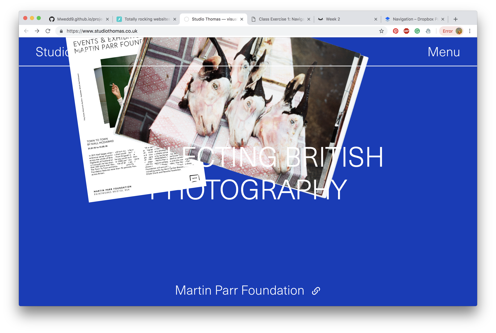
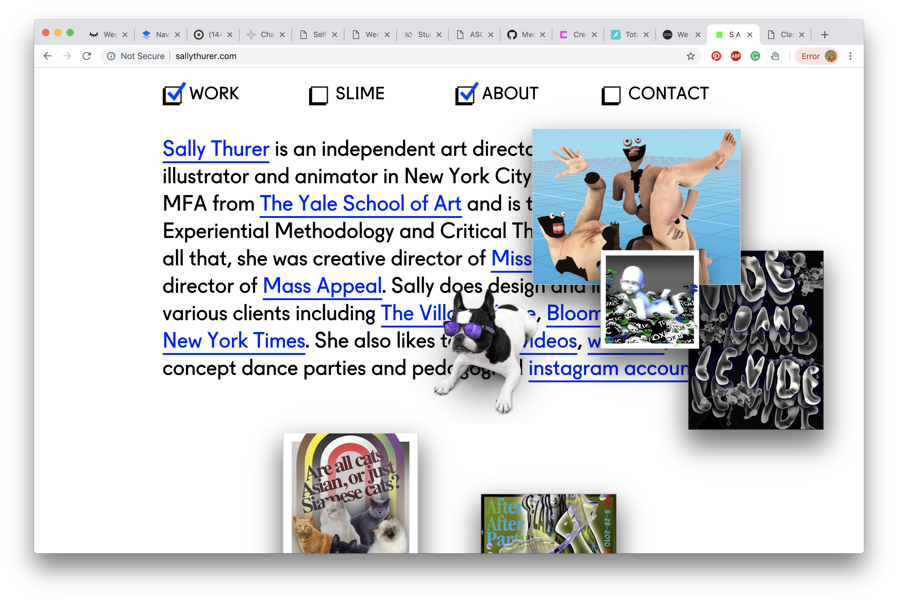

Studio Thomas Studio Site

- The purpose of this site is a site showing off a studio, it shows the work revolved around the studio. This page is succesful to me because it uses all types of navigation, which is interesting in that sites ussualy use only one. It uses scrolling, clicking to make images appear, similar to collage, and using text to navigate. Without the text interactions dont neccarily help with the user's information intake but rather the aestheic value of the site. The intention of the desginer I belive was to make the site exciting and showing connections and collaboration between the works.
Unspoken Agreement

- The purpose of this site is a artists page of photgraphy.This website work well because it has minimal text and mainly high res images, which makes the viewer intrigued about the work, it doesnt give too much away. The navigation is clear text with a good hover affect. The page could be improved is you could find more content about the work,, however maybe the artists intention was to have the user inquire to them personally.
Sally Thurer Artist Site

- This site has a creative navigation, using elements of collage and filtering to show your options, for a personal site about work it also is creative, fun, and exciting. It is a great example of a clear and creative artist site,